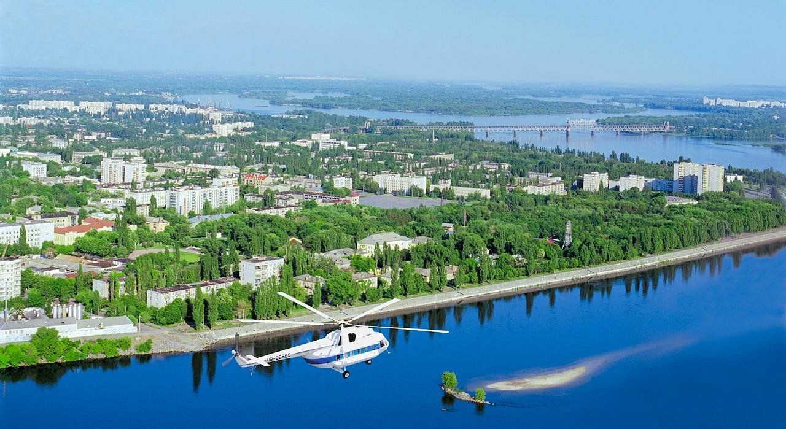

Kremenchuk is an industrial city in central Ukraine which stands on the banks of the Dnieper River. The city serves as the administrative center of Kremenchuk Raion and Kremenchuk urban hromada within Poltava Oblast. Its population is approximately 215,271 (2022 estimate), ranking 31st in Ukraine. In 2001, the Ukrainian government included the city in the list of historical settlements.
Although not as large as some oblast centers, Kremenchuk has a large industrial center in Ukraine and Eastern Europe. A KrAZ truck plant, the Kremenchuk Oil Refinery of Ukrtatnafta, the Kriukiv Railway Car Building Works, and Kremenchuk Hydroelectric Power Plant, in nearby Svitlovodsk, are located in or near Kremenchuk. Highway M22 crosses the Dnieper over the dam of the power plant.
Kremenchuk was founded in 1571 as a fortress. The name Kremenchuk is explained as deriving from the word "kremen" - flint (a mineral) because the city is located on a giant chert plate. An alternative explanation says that "Kremenchuk" is the Turkish for "small fortress".
Kremenchuk is the economic center of the Poltava Oblast and one of the leading industrial centers of Ukraine. As of 2005, it contributed about 7 percent of the national economy and accounted for more than 50 percent of the industrial output in Poltava Oblast. The city is home to KrAZ, a truck-manufacturing company (one of the largest in Eastern Europe) as well as a major European oil refinery operated by Ukrtatnafta, the road-making machine works, Kremenchuk Automobile Assembly Plant, the Kryukivsky Car Manufacturing Plant, train railway rolling stock wagons, the wheel plant, the carbon black plant, the steel works and others.
The light industries of the city include:
Kremenchuk is one of the most important railway junctions in Central Ukraine (thanks to its geographical position and a bridge over the Dnieper River) and a major river port on the main river of Ukraine.